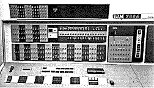
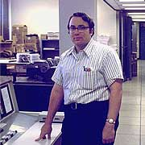

2026-01-07
The IBM 7094 and CTSS

An IBM 7094
This note describes MIT's IBM 7094 and the Compatible Time-Sharing System (CTSS) operating system, based on my experience at MIT in the 1960s. My personal story is described in "My Experience with the IBM 7094 and CTSS".
MIT's Mainframe Computers
The MIT Computation Center got its IBM 7090, in the spring of 1962, replacing a 709, and upgraded its 7090 to a 7094 by 1963.
In the mid-1960s, IBM's 7094 was one of the biggest, fastest computers available, able to add floating numbers at a speed of about 0.35 MIPS.
 A standard 7094 had 32K 36-bit words of memory.
Its data channels could access memory and run simple channel programs to do I/O once started by the CPU,
and the channels could cause a CPU interrupt when the I/O finished.
A 7094 cost about $3.5 million, back when that was a lot of money.
A standard 7094 had 32K 36-bit words of memory.
Its data channels could access memory and run simple channel programs to do I/O once started by the CPU,
and the channels could cause a CPU interrupt when the I/O finished.
A 7094 cost about $3.5 million, back when that was a lot of money.
IBM had been very generous to MIT in the fifties and sixties, donating or discounting its biggest scientific computers. When a new top of the line 36-bit scientific machine came out, MIT expected to get one. In the early sixties, the deal was that MIT got one 8-hour shift, all the other New England colleges and universities got a shift, and the third shift was available to IBM for its own use. One use IBM made of its share was yacht handicapping: the President of IBM raced big yachts on Long Island Sound, and these boats were assigned handicap points by a complicated formula. There was a special job deck kept at the MIT Computation Center, and if a request came in to run it, operators were to stop whatever was running on the machine and do the yacht handicapping job immediately.
The Deputy Director of the MIT Computation Center was the late Prof. Fernando J. Corbató,
known to everybody as Corby.
The Director was  Prof. Philip M. Morse, who didn't seem to be involved in the day-to-day operations of the Center; Corby ran the whole thing.
When you submitted FMS jobs, you specified your problem number and programmer number.
The lower your number, the longer you had been associated with the Computation Center.
Corby's programmer number was 3.
Prof. Philip M. Morse, who didn't seem to be involved in the day-to-day operations of the Center; Corby ran the whole thing.
When you submitted FMS jobs, you specified your problem number and programmer number.
The lower your number, the longer you had been associated with the Computation Center.
Corby's programmer number was 3.
FMS and Batch Processing
The 7090 and 7094 were operated in batch mode, controlled by the tape-based Fortran Monitor System (FMS). Batch jobs on cards were transferred to tape on an auxiliary IBM 1401 computer system, and the 7094's FMS monitor read one job at a time off the input tape, ran it, and captured the output on another tape for off-line printing and punching by the 1401. Each FMS user job was loaded into 7094 core by the BSS loader along with a small monitor routine that terminated jobs that ran over their time estimates. Library routines for arithmetic and I/O were also loaded and linked with the user's program. Thus, each user's job had complete control of the whole 7094, all 32K words of memory, all the data channels, everything.
(Just to be clear: MIT's system had no hard drive. "Big data" in those days meant reels of 556 DPI tape.)
MAD Language
MIT and the University of Michigan were both 7094 owners, and their computation center people were colleagues who traded code back and forth.
In 1961, the elementary course used FORTRAN, but by 1963, MIT had installed Michigan's  MAD (Michigan Algorithm Decoder) language,
written by Graham, Arden, and Galler, and was using that in most places that a compiler language was needed, especially computer courses.
MAD was descended from ALGOL 58: it had block structure and a very fast compiler, and if your compilation failed,
the compiler used to print out a line printer portrait of Alfred E. Neumann, as shown in
MAD (Michigan Algorithm Decoder) language,
written by Graham, Arden, and Galler, and was using that in most places that a compiler language was needed, especially computer courses.
MAD was descended from ALGOL 58: it had block structure and a very fast compiler, and if your compilation failed,
the compiler used to print out a line printer portrait of Alfred E. Neumann, as shown in  Larry Krakauer's blog.
(MIT took that out to save paper.)
Mike Alexander says, "MAD was first developed about 1959 or 1960 on a 704, a machine which makes the 7094 look very powerful indeed."
At that time MAD ran under UMES, the University of Michigan Executive System,
derived from a
Larry Krakauer's blog.
(MIT took that out to save paper.)
Mike Alexander says, "MAD was first developed about 1959 or 1960 on a 704, a machine which makes the 7094 look very powerful indeed."
At that time MAD ran under UMES, the University of Michigan Executive System,
derived from a  1959 GM Research Center executive for the IBM 704 that was one of the first operating systems.
1959 GM Research Center executive for the IBM 704 that was one of the first operating systems.
Early Time-Sharing at MIT
MIT professors, such as Herb Teager and Marvin Minsky, wanted more access to the machine,
like they had had on Whirlwind in the fifties and the TX-0 in the sixties,
and quicker return of their results from their FMS jobs.
Professor John McCarthy wrote an influential memo titled "A Time Sharing Operator Program for Our Projected IBM 709" dated January 1, 1959,
that proposed interactive time-shared debugging.
These desires led to time-sharing experiments, such as Teager's "time-stealing system" and "sequence break mode,"
which allowed an important professor's job to interrupt a running job,
roll its core image out to tape, make a quick run, and restore the interrupted job.
McCarthy's  Reminiscences on the History of Time Sharing describes his and Teager's role in the beginnings of time-sharing.
Teager and McCarthy presented a paper titled "Time-Shared Program Testing" at the ACM meeting in August 1959.
Reminiscences on the History of Time Sharing describes his and Teager's role in the beginnings of time-sharing.
Teager and McCarthy presented a paper titled "Time-Shared Program Testing" at the ACM meeting in August 1959.
CTSS development had started in 1961, led by Corby, Bob Daley, and Marjorie Merwin-Daggett. A version of CTSS that swapped four users to tape was demonstrated on MIT's IBM 709 in November of 1961. This system could support four Friden Flexowriter terminals directly connected to an I/O channel of the computer. CTSS was described in a paper at the 1962 Spring Joint Computer Conference, even though the software wasn't quite working on the IBM 7090. Much of the CTSS research was funded by US National Science Foundation grants to the Computation Center. Development continued through 1962 and 1963, and system capabilities and usage continued to expand. Limited CTSS service to MIT users on the IBM 7090 began in May 1963, supporting the Project MAC Study (see below).

Corby on WGBH
CTSS on Television
Corby was interviewed by John Fitch for the Science Reporter program on WGBH-TV on May 9, 1963.
He  demonstrated CTSS running on MIT's 7090.
The program aired on aired on WGBH-TV on May 16, 1963.
demonstrated CTSS running on MIT's 7090.
The program aired on aired on WGBH-TV on May 16, 1963.
CTSS
CTSS was called "compatible" in the sense that FMS could be run in B-core as a "background" user, nearly as efficiently as on a bare machine, and also because programs compiled for FMS batch could be loaded and executed in the "foreground" time-sharing environment (with some limitations). Background jobs could access some tape units and had a full 32K core image. This feature allowed the Computation Center to make the transition from batch to timesharing gradually, and to retain the ability to run "dusty decks" and software from other institutions. The Comp Center got the CTSS RPQs added to the blue IBM 7094 and began running standard CTSS service in 1965. (RPQ was IBM jargon for Request Price Quotation. IBM, in those days, would engineer and sell features not part of the standard product, for a price.) The configuration for both machines included about a dozen tape drives, a swapping drum, and a 1301 hard disk file with a capacity of about 36 megabytes, shared among all users of the machine.
The CTSS supervisor provided a number of "virtual machines," each of which was an IBM 7094. One of these virtual machines was the background machine, and had access to tape drives. The other virtual machines were foreground users: these virtual machines could run regular 7094 machine language code at 7094 speed, and could also execute one extra instruction, which invoked a large set of supervisor services. These services included terminal I/O and file system I/O. Programs could be written for the foreground environment in any language available for the 7094; libraries were provided to allow compiler languages such as MAD to call on supervisor services. CTSS provided a file system that gave each registered user a separate directory of disk files.
The key features of CTSS were virtual machines, hardware isolation of users from the supervisor and from each other, and a per-user disk file system. Because the user virtual machine supported the same architecture and instruction set as the 7094, CTSS was able to support a large body of applications originally developed for the FMS batch environment at MIT and elsewhere.
CTSS software included not only the supervisor but also a set of "foreground" command programs and subroutine libraries. Many of these commands read files from the user's file system storage and wrote other files; for example, the MAD compiler read a disk file containing program source and wrote a disk file containing machine instructions in BSS (binary) format. Most of the foreground MAD command was identical to the background MAD compiler on the FMS system tape, with the addition of a wrapper to handle command line options, and replacements for the input and output routines to read and write disk files instead of tape, and to write error messages to the user's terminal. IBM FORTRAN II would not run in CTSS foreground, because the FORTRAN compiler was a complex multi-pass monster. The MADTRN command was provided on CTSS: it translated FORTRAN programs to MAD and then compiled the resulting program with the MAD command.

7094 console
Project MAC
In 1963, MIT obtained funding from ARPA for Project MAC, an interdepartmental laboratory to explore development and use of time-sharing. Its first major activity was the 1963 Project MAC Summer Study, where computer scientists from many institutions spent time at Project MAC using the brand new idea of a time-shared computer. Project MAC's plans included the development of a next-generation time-sharing system called Multics. CTSS was to be used as the programmers' tool to develop this new system, as well as the tool to support other research projects, such as database and language research. The Director of Project MAC was MIT Professor Robert M. Fano, a well respected electrical engineering professor, one of the authors of the canonical electromagnetic theory textbook. His Assistant Director was Dick Mills, who had worked on Whirlwind and contributed to early CTSS development.

Prof. Fano using CTSS
YouTube has a movie clip from 1964 of Professor Fano
 describing time-sharing and using CTSS on a Model 35 Teletype.
describing time-sharing and using CTSS on a Model 35 Teletype.
By the time of the 1963 Summer Study, CTSS was in use as a service on the Computation Center IBM 7090, supported by hardware RPQs. Computer researchers from all over the country, from academia and industry, used CTSS to try interactive computing.
Project MAC got its own IBM 7094 in October 1963 (paid for by ARPA) in the new Tech Square building behind MIT, and this was the computer used for the 1963 Project MAC Summer Study. Starting in 1965, the Computation Center machine, upgraded to a 7094, ran CTSS and FMS in the background; it had the standard blue side panels. The Project MAC machine had red side panels, and staff often referred to "the red machine" or "the blue machine."
By 1965, many CTSS developers had moved over to Project MAC and was beginning the design of Multics. A final major CTSS enhancement project in 1965 was a new, much better, file system, in order to to ensure that the system would be adequate to support Multics development, and that the Computation Center CTSS service would be robust.
CTSS Features
Shared Files
The biggest discovery from the CTSS experience was the importance of online file systems and file sharing. The initial 1960 vision timesharing was focused on access to CPU and memory. When that was implemented, feeding input into programs and capturing their results required a way to have rapid access to per-user data; disk storage filled that need. Some early systems stopped there, essentially dividing the disk storage into per-user chunks. As CTSS developed, it provided ways for users to name and share their files on disk, through "common files" and symbolic links, and the collection of on-line shareable data became the seed of a community of information sharers. We are now seeing a shift in computer usage from individual piles of files on individual PCs to storage and sharing "in the cloud" that parallels the discoveries about what is important that we saw with CTSS in the 1960s. It may be that "cloud computing" will encounter again some of the same hard lessons about security and community that we learned at Project MAC.
IBM 7094 CPU Modifications
The hardware RPQs that made CTSS run on MIT's 7094s added an interval timer (B/M 570220) and memory boundary and relocation registers (RPQ E007291) to the 7094 processor. In addition, the MIT machines had two 32K core memory banks instead of one (RPQ E02120). Core bank A held the CTSS supervisor, and B Core was used for user programs. More importantly, the RPQ made the 7094 a two-mode machine. When the machine was running a program in B-core, many instructions were forbidden: executing them caused the machine to trap and take its next instruction from A-core. In particular, I/O instructions were forbidden, as well as attempts to switch core banks.
By CTSS convention, user foreground programs called on supervisor services, such as the file system, by executing a TSX ADDR,4 where ADDR held TIA =HWRFLXA. (Where WRFLXA was the name of the entrypoint being called.) The TIA instruction was illegal in B-core mode, so the 7094 CPU trapped into A-core. The CTSS supervisor running in A-core invoked a module named PMTI (Protection Mode Trap Interpreter), which looked up the BCD name of the supervisor entrypoint WRFLXA, found its location, and made the transfer.
Memory Boundaries and Swapping
CTSS used the modified 7094's memory boundary register to limit user jobs' access to only part of B-core, so that the supervisor didn't have to swap 32K to drum for every job. An algorithm called the "onion skin" left parts of a big job's core image in memory if a little job ran next, and handled all the complicated space accounting and reassembly of images. If the drums filled up, swapping spilled to disk.
(I remember visiting SDC in Santa Monica, in 1967, and seeing their AN/FSQ-32 timesharing system there, which lacked these features. When you issued a command, the swap space was statically allocated, and if there wasn't enough to go around, you might have to keep trying.. the message LOAD OK ON 9 mean you'd claimed enough drum to run.)
Indirect Addressing
The 7094 didn't recognize the indirect flag in an indirect word, but it had the XEC opcode, which executed an instruction out of line, and if you did XEC * the CPU would sit there taking I-cycles, uninterruptible, until an operator manually reset the CPU. People were warned not to do this. If they did it while CTSS was running it froze the system, and operations took a core dump and restarted CTSS, causing all active users to lose their work. System programmers would analyze the dump and identify and fuss at the user.
Story: The Password File
The one time XEC * was used in a good way was the day in 1966 that a certain Computation Center administrator's mistake
caused the CTSS password file and the message of the day to be swapped.
Everybody's password was displayed in clear to each user that logged in.
(The editor in those days created a temporary file with a fixed name.)
This was before (and was the origin of) the idea of one-way encrypting passwords.
Bill Mathews of Project TIP noticed the passwords coming out, and quickly entered the debugger and crashed the machine by entering an XEC * instruction.
Naturally this happened at 5 PM on a Friday, and I had to spend several unplanned hours changing people's passwords.
(The problem is described and analyzed in Corby's  Turing Award Lecture.)
Turing Award Lecture.)
Terminal Access
By 1963, CTSS provided remote terminal service to dial-up terminals connected by modem to a specialized telecommunications computer, the IBM 7750. Model 35 Teletypes were used at first, followed by IBM 1050 terminals and IBM 2741s. The 7750 and the IBM Selectric terminals were designed for other uses, such as stock trading and airline reservations, and CTSS adapted to the design of these devices. CTSS did specify certain RPQs to be added to the 2741:
- Automatic Address Answerback -- RPQ E46148
- Red Ribbon Control -- RPQ 868019
- Print Inhibit Control -- RPQ E46151
- Transmit Interrupt Control -- RPQ E40681
- Inhibit Auto EOT: no EOT on CR or ATTN
CTSS users would look at the output of Noel Morris's WHO command to see where their friends and colleagues were connecting to the system from. Terminal access for Teletype terminals was at 110 baud. The 1050 and 2741 terminals could support 134.5 baud. All of these devices were supported over dial-up Bell 103A modems, accessed via a private phone exchange at MIT.
Notable CTSS Applications
Electronic Mail
There were a few other significant improvements about that same time, some contributed by the user community. Noel Morris and I wrote a command, suggested by Glenda Schroeder and Louis Pouzin, called MAIL, which allowed users to send text messages to each other; this was one of the earliest electronic mail facilities. (I am told that the Q-32 system also had a MAIL command in 1965.)
RUNCOM and the Shell
Louis Pouzin also invented RUNCOM for CTSS. This facility, the direct ancestor of the Unix shell script, allowed users to create a file-system file of commands to be executed, with parameter substitution. Louis also produced a design for the Multics shell, ancestor of the Unix shell.
Command Abbreviation and Instant Messaging
Noel Morris and I created a replacement command processor, . SAVED, partly inspired by the promised Multics shell features. It supported user-defined abbreviations, multiple commands on a line, and inter-user instant messaging. The combination of . SAVED and RUNCOM allowed CTSS power users to define their own productive command environments.
RUNOFF
Jerry Saltzer wrote one of the very first computer word processing programs, RUNOFF, for CTSS in 1963 and 1964. This program is the ancestor of Unix roff, nroff, and similar text formatting facilities for many other systems. Users edited the input files for RUNOFF with a special editor, TYPSET, that supported upper and lower case letters.
Jerry has placed the original CTSS documentation for RUNOFF online as  Manuscript Typing and Editing
(from Patricia Crisman, editor,
The Compatible Time-Sharing System, A Programmers Guide. Second edition. M. I. T. Press, 1965, section AH.9.01, December 1966 revision) and
Manuscript Typing and Editing
(from Patricia Crisman, editor,
The Compatible Time-Sharing System, A Programmers Guide. Second edition. M. I. T. Press, 1965, section AH.9.01, December 1966 revision) and
 TYPSET and RUNOFF, memorandum editor and type-out commands,
M.I.T. Computation Center Memorandum CC-244 / M.I.T. Project MAC Memorandum MAC-M-193. November 6, 1964.
The source of RUNOFF is included in Jerry Saltzer's source archive.
TYPSET and RUNOFF, memorandum editor and type-out commands,
M.I.T. Computation Center Memorandum CC-244 / M.I.T. Project MAC Memorandum MAC-M-193. November 6, 1964.
The source of RUNOFF is included in Jerry Saltzer's source archive.
Graphics
The ESL Display, familiarly known as The Kludge, was an interesting device attached to the Project MAC 7094.
It consisted of a PDP-7 computer with a vector display scope and a controller that interfaced directly with channel D.
This device could be used for interactive graphics with light pen and mouse input.
It is described in  a report by Dan Thornhill and others.
a report by Dan Thornhill and others.
A very informative SIGGRAPH 89 panel on  "The Early Years in Computer Graphics at MIT, Lincoln Lab and Harvard"
has photos of the Kludge and more.
"The Early Years in Computer Graphics at MIT, Lincoln Lab and Harvard"
has photos of the Kludge and more.
QED Editor
QED was a text editor contributed to the CTSS community by Ken Thompson, a Multics programmer at Bell Labs in about 1966. This line-oriented editor was influenced by the character-oriented QED editor on the SDS-940; one of QED's major features was regular expression searching and substitution. QED was ported to Multics BCPL by Ken and Dennis Ritchie. QED was programmable: it supported multiple buffers, and a user could execute the contents of a buffer containing editor commands. Some remarkably arcane editor applications were written using QED.
Multics Development Tools
Using CTSS for Multics development led to additional improvements to CTSS besides those mentioned above. Cross compilers and cross debuggers for Multics development runs were created on CTSS, along with inter-computer batch submission tools. The workload represented by about 75 system developers forced the development of CTSS load management and resource sharing schemes. The Multics developers were also members of the CTSS development community, contributing additional software and bug fixes. See The GE-635s at Project MAC and BTL for discusion of CTSS commands used for Multics development.
Leadership
Corby inspired his whole team with the vision of interactive, powerful, personal computing. Timesharing was necessary because powerful computers were so expensive that they had to be shared: hence the "computer utility." Our goal was to empower the individual programmer. Batch processing was still quite young, but its proponents were vicious in putting down any newer idea.
Corby also fostered a wonderful set of design and implementation skills in his team. Honesty, peer review, unselfishness, concentration on essentials rather than frills, and rapid production of results were things we learned from him. Tom De Marco wrote much later about "jelled" teams in Peopleware: my time working for Corby on CTSS and Multics was when I first enjoyed such a team.
Story: Corby's Hardware Transient and the Blackout
During the fall of 1965, the Computation Center was trying to bring up CTSS on the blue machine, and requesting help from the former CTSS developers at Project MAC when they ran into problems they couldn't handle. The blue machine kept crashing in the disk backup software, in a way we'd never seen, and the dumps didn't make sense. Hardware diagnostics showed no problem; the IBM CEs insisted the machine was fine. Bob Daley and Stan Dunten, in particular, were called on repeatedly to try to figure out what was going on. Corby involved himself too, and hypothesized a "hardware transient" that zapped some registers. Finally the late Mike Padlipsky and Charlie Garman took over the blue machine in the middle of the day, and loaded a one-card program with a simple test loop, and left it running. After about ten minutes of execution, the failure count in an index register suddenly began counting up: they had caught the bug! (The bug was something like: the TXL and TXH opcodes sometimes reversed roles, in only one of the two core banks, if a big enough truck went by on Vassar Street.) The programmers heaved a sigh of relief, turned the machine over to the IBM CEs, and headed over to Tech Square House (the bar on the first floor of Tech Square) to celebrate. Quite a few people came down to the bar for a drink, when suddenly the lights went out. I remember I ran up nine flights of stairs to help crank the tape out of the Model 729 tape drives by hand, because the tapes in the drive could be damaged when power came back on. I needn't have run: it was November 9, 1965, and the lights were out over the entire East Coast, and stayed out until the next morning. This event was written up in Comp Center Programming Staff Note 55 by Mike Padlipsky.
Other Timesharing Systems
There were other time-sharing systems being invented during the same period at other places. (I don't want to get into questions of who was first at what.) Here are a few notable systems:
- RAND's JOSS system was operational on JOHNNIAC in 1963 and was later ported to a PDP-6.
- The BBN Time-sharing system was built in the early 60s by Ed Fredkin with John McCarthy and Shelly Boilen on a DEC PDP-1.
- The PLATO II system was built by Donald Bitzer at the University of Illinois and demonstrated in 1961.
- RAND's SDC Time-sharing system on the AN/FSQ-32, led by Ed Coffman, Jules Schwartz and Clark Weissman, was operational in 1963.
- Andy Kinslow at IBM built a system called the Time-Sharing Monitor System on a modified 7094. A paper describing it was published in 1964.
- Dave Evans and Harry Huskey at Berkeley built a system called
 Project GENIE on a modified SDS 930 in 1964.
Project GENIE on a modified SDS 930 in 1964. - John Kemeny and Thomas Kurtz built the Dartmouth time-sharing system in 1964 on a GE-255.
I have written elsewhere about how Project MAC chose the GE-645 as the platform for its next generation system, Multics, instead of IBM's proposal of a System/360 machine. The MIT Computation Center chose a 360 Model 65 for its next generation batch environment, and installed and ran a large 65/40 shop running OS/360 and ASP during the time that Multics was being developed at Project MAC. This system added support for OS/360's Time Sharing Option in the 1970s. The MIT Urban Systems Laboratory obtained funding that supported the installation of an IBM 360/67, running the CP/CMS time-sharing system, in 1968.
Old Age
The Multics project began in 1965 and was a big consumer of the MAC CTSS. There was much more demand than one 7094 could provide. People resources were also stretched: Corby concentrated on building and leading Multics and gave up his role as DD of the Comp Center. In 1965 the Comp Center got the RPQ changes necessary to run CTSS and the additional hardware needed, and began to run its own CTSS. Almost all of the original designers moved on from Comp Center to Project MAC, or to other jobs such as IBM Cambridge Scientific Center, where CP/CMS was built. The MAC people who understood CTSS, like Bob Daley, were under pressure to not waste their time tweaking it, just stabilize it and use it as a tool, and provide a copy to Comp Center. In late 1968, the MIT Computation Center returned the "blue" 7094 to IBM. The "red machine" was moved from MAC to the new Information Processing Center, building 39, and Multics developers shared CTSS resources with general MIT time-sharing users until Multics was self-supporting in early 1969. The Comp Center folks assembled a team of interested undergraduate and part-time system programmers to support CTSS, and Roger Roach was one of the leaders.
CTSS continued in use for several more years, with gradually declining usage, as MIT computer users switched to OS/360 batch, CP/CMS timesharing on the 360/67, or Multics. One project, called the Overlap Project, was funded to support 7094 usage until equivalents for some CTSS social-science tools were found or created on other machines.
There was one kind of funny problem with this long decline of CTSS: every year, there was a fire drill as we tried to remember what you had to do to create a system for the next year. The Chronolog clock attached to tape channel E of the machine provided a date and time in BCD, but without the year; that came from a constant in the supervisor, and each year we had to recompile one small module, and relink the supervisor, the salvager, and a few other standalone utilities. As the original CTSS crew gradually moved on to other jobs, fewer and fewer people knew how to carry out this task, but we always managed to figure out how. And each year, we considered making the constant a configuration item somehow, and decided not to bother, because the system wouldn't last another year.


I was there the day Roger Roach finally shut down the red machine for good, on July 20, 1973.
The 7094 was a fine machine, but by the time it was over ten years old,
it had become expensive to maintain, hard to find expert programmers for,
and had been deserted by most users in favor of faster and more modern machines.
A group of students proposed that they'd take over the machine and run it for student computing;
the floor space, air conditioning, and maintenance costs made this impractical,
but some of these students went on to found MIT's Student Information Processing Board,
which supported student computing at MIT in many ways, and  still exists today.
still exists today.
When CTSS shut down, it was time for it to go: the hardware was becoming ancient and flaky. But looking at what it could do, and what people did with it, shows that many subsequent systems were less capable and vastly more wasteful.
There was a ceremony held in 1974, the year after we shut CTSS down for good, to honor those who worked on the system and those who supported it. A list of people involved was compiled.
Documentation
- The first paper on CTSS: "An Experimental Time-Sharing System," by Fernando J. Corbató, Marjorie Merwin Daggett, and Robert C. Daley.
- IBM 7094 reference card .
- MAC-TR-12, "The MAC system: a progress report," by Prof. Fano describes the usage of CTSS with examples.
-
The first edition of the CTSS manual (the so-called "candy stripe" book published by MIT Press)
describes the system and its commands as of about 1963.
(104 pages, 3.7MB PDF)
- Time-Sharing System Notes dated November 1963 is an update to the first edition manual. (16 pages, 835KB PDF)
- MAC-TR-16, "CTSS TECHNICAL NOTES," by Jerry Saltzer describes the internals of CTSS as of 1965. (3.5MB PDF)
- Professor Fano presented a paper titled "The Computer Utility and the Community" in 1969.
- The second edition of the CTSS manual describes the system and its commands as of 1969. (587 pages, 25MB PDF)
-
The late Bob Creasy wrote "The Origin of the VM/370 Time-sharing System" in the
IBM Journal of Research and Development, Vol. 25, No. 5, September 1981.
This article describes the roots of CP/CMS in CTSS.
- In 1988, after the Project MAC 25th Anniversary Celebration, two groups of participants in the developments of CTSS and Project MAC met to exchange recollections about their activities. Lee, J. A. N., Robert Rosin, F. J. Corbató, R. M. Fano, M. Greenberger, J. C. R. Licklider, D. T. Ross, and A. L. Scherr, The Project MAC Interviews, IEEE Annals of the History of Computing, vol. 14, no. 2, pp. 14-35, Apr-Jun, 1992
- Mary Brandel wrote a story on CTSS for Computerworld in June, 1999.
-
Errol Morris five part blog posting about CTSS history and the creation of MAIL in his New York Times blog, June 2011.
(Part five has links to parts 1 through 4. Use part 5 to find the other parts.)
- Errol Morris gave an interview on NPR about CTSS MAIL on June 20, 2011.
- An article by me on the history of MAIL was published as "Electronic Mail and Text Messaging in CTSS, 1965-1973," in the IEEE Annals of the History of Computing Vol. 34, No. 1: January-March 2012, pp. 4-6.
-
Jerry Saltzer provides a comprehensive CTSS bibliography at MIT CSAIL's site.
50 Year Anniversary Brochure
The IEEE Computer Society History Committee published a document in honor of the 50th anniversary of CTSS,
titled The Compatible Time Sharing System (1961-1973) Fiftieth Anniversary Commemorative Overview, edited by the late Dave Walden and Tom Van Vleck.
It contins an extensive bibliography,
and interviews with Corby, Marge Daggett, Bob Daley, Peter Denning, David Alan Grier, Dick Mills, Roger Roach, Allan Scherr, and me.
(Chapter 2 of the brochure is derived from this web page.)
The document was published on 24 June, 2011, and is available at the  IEEE Computer Society History Committee site.
It is mirrored at this site with IEEE permission. (48 pages, 3MB PDF)
IEEE Computer Society History Committee site.
It is mirrored at this site with IEEE permission. (48 pages, 3MB PDF)
Source
Listings for the source of CTSS as of about 1972 are online in  Jerry Saltzer's files at CSAIL.
You can download a 5MB ZIP file that contains the compilation listings for the supervisor, salvager, daemon, and commands (including MAIL and RUNOFF).
A few extra files are needed, located in
Jerry Saltzer's files at CSAIL.
You can download a 5MB ZIP file that contains the compilation listings for the supervisor, salvager, daemon, and commands (including MAIL and RUNOFF).
A few extra files are needed, located in  Jerry's source directory at CSAIL.
Jerry's source directory at CSAIL.
CTSS Simulator
(July 2010) Dave Pitts has created a version of  CTSS running on a 7094 simulator written by Paul Pierce.
You can log in, execute commands, and compile and run MAD and FAP programs.
CTSS running on a 7094 simulator written by Paul Pierce.
You can log in, execute commands, and compile and run MAD and FAP programs.
Personal Experience
My personal experience with CTSS is described in "My Experience with the IBM 7094 and CTSS".
Updated 06/22/95. Thanks to Paul McJones, Mike Padlipsky, Frank Belvin, Olin Sibert, and Joe Morris for corrections, and to Mike Alexander for info about MAD and UMES. More updates 12/18/97. Updated 03/30/03 with information about RUNOFF and TYPSET, thanks to Jerry Saltzer. Updated 09/10/04 with pointer to CTSS source. Updated 09/01/09. Updated 07/09/10 with pointer to the 7094 simulator. Updated 11/07/10 with information from Ed Thelen. Reorganized 03/12/11, 04/05/11. Added IEEE-CS brochure 06/30/11. Added Prof. Fano's paper 03/16/15.
Copyright (c) 1995-2026 by Tom Van Vleck